CodingZones: turning screen time into thinking time
A mobile-first learning web app for children in Indonesia. Twenty short games train logic, patterns, early coding and AI thinking. Five games are free, and the rest unlock with an affordable monthly code. I designed and shipped it end to end.
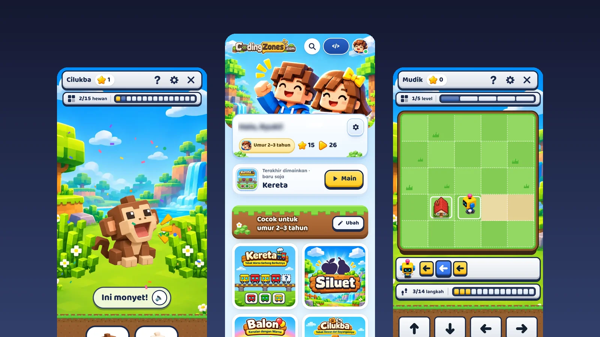
Two users, one cheap phone
Parents want screen time that is actually useful, not another hour of scrolling short videos. Children want something fun that they can play without help, often before they can read. And in most Indonesian homes, both of them share one low-end Android phone with limited data.
Wants to trust the app before paying, worries about ads, top-ups and data use, and needs a way to stop the session.
Can't type or read well, taps fast, loses interest quickly and needs clear, instant feedback.
Six decisions that shaped the product
Open the app and play in seconds. There is no account, email or password standing between a child and the first game.
Five games are free forever, and premium games have a trial mode, so parents see the value before any purchase. No ads, no top-ups.
Every prompt can be read aloud, and controls are big touch targets, so children who can't read yet can still play alone.
A shared engine, level picker and feedback pattern. Learn one game and you know how to play them all.
A per-session time limit with a lock screen, and a simple math gate that only an adult can pass.
No frameworks, 6–25 KB per game and about 7 MB for the whole app, with offline support as a PWA.
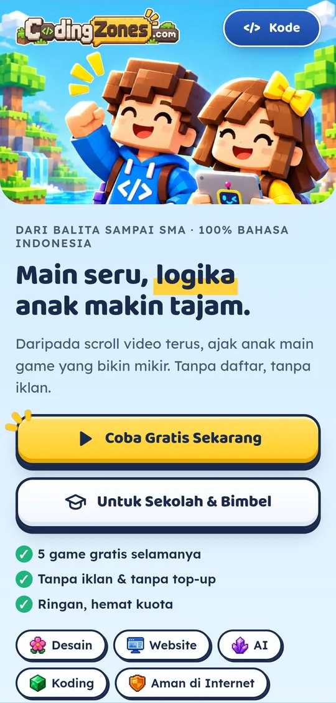
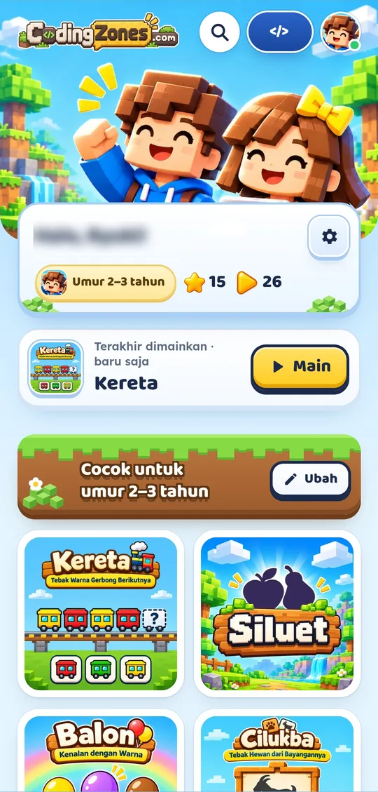
Designing a system, not twenty one-off games
With one designer and twenty games, consistency had to come from the system. Every game shares the same frame: a top bar with the game name, stars, help, settings and close; a progress bar for rounds or levels; the play area; and a voice prompt with a speaker button. Trial games carry a clear "COBA" (trial) badge in the same place.
The library works the same way. Parents can filter by type (coding, AI, online safety, design, websites, little ones, logic), by free or premium access and by age, and switch between a grid and a list. Each card shows the difficulty, the play time and the age range, so a parent can choose in seconds.
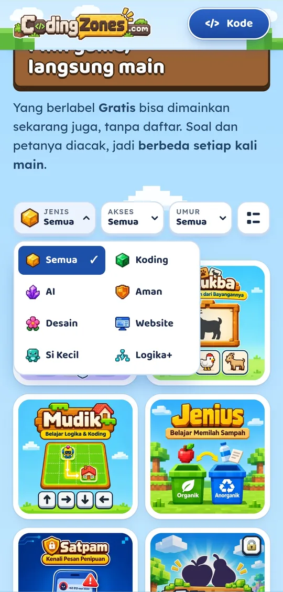
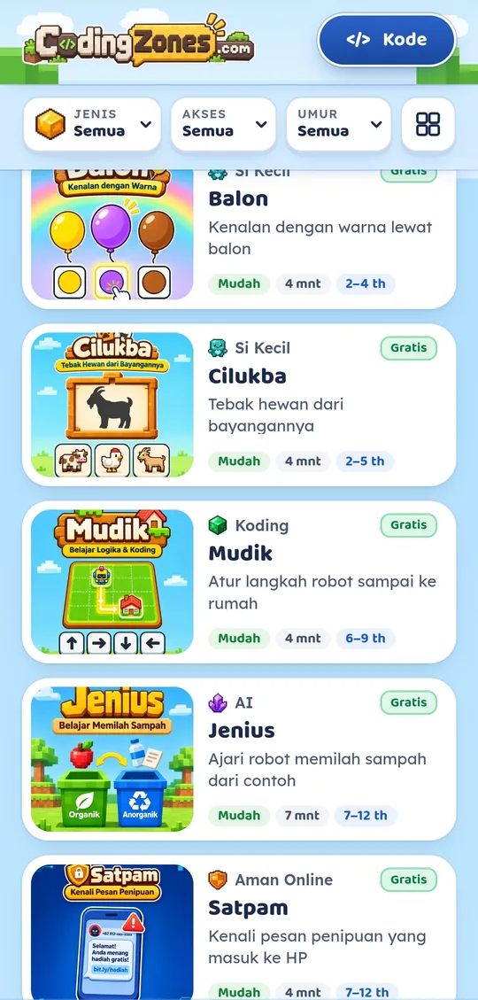
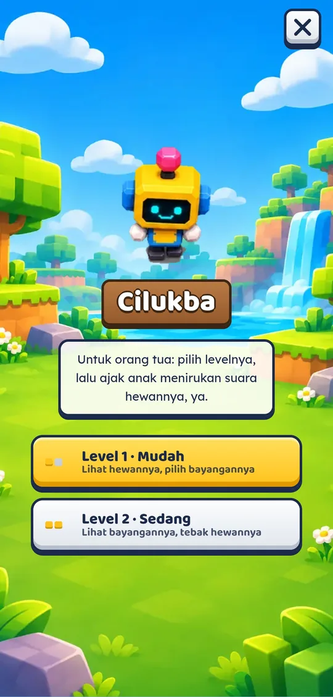
Small games, real thinking skills
Each game targets one skill and fits into a few minutes. The interaction is always the simplest one a small hand can do: tap a big answer, drag a shape, or press an arrow.
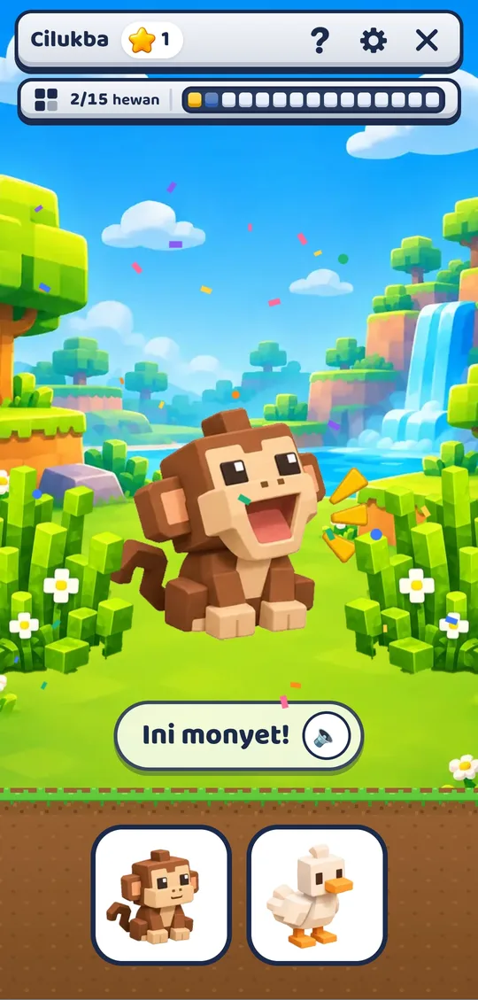
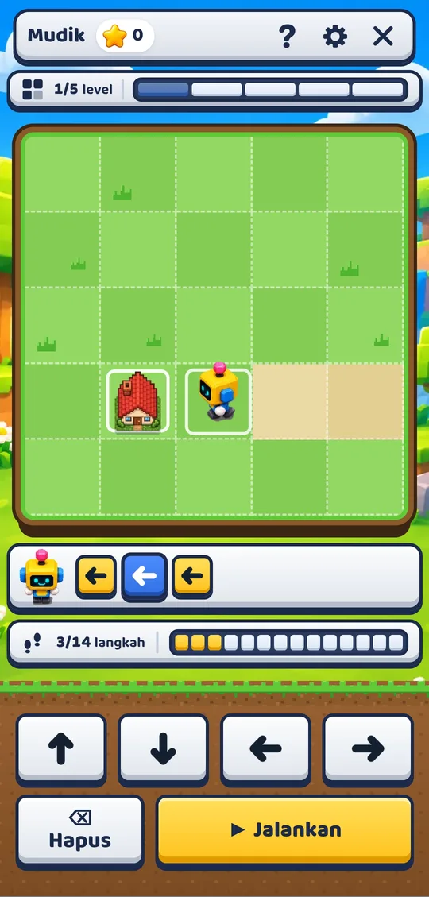
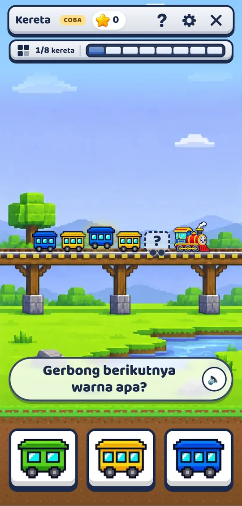
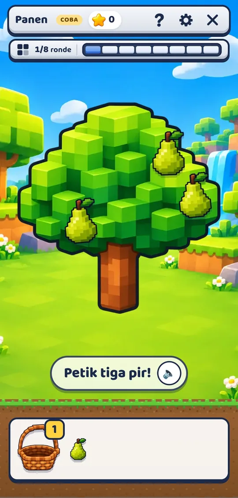
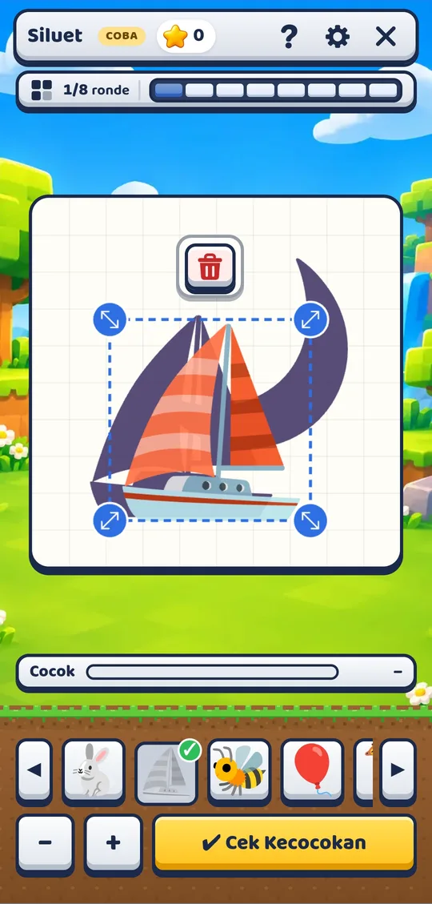
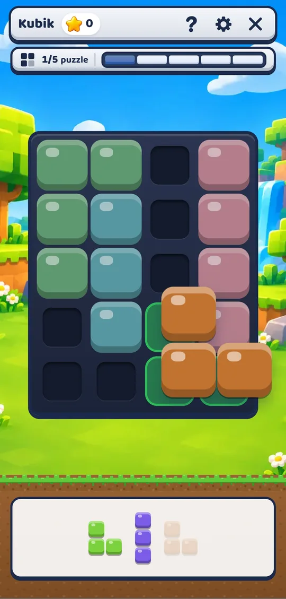
A cheerful voxel world
I built a world children already find familiar and fun: blocky voxel landscapes, two child characters and Zozo, the robot guide who introduces every game. Animals and fruit are animated, correct answers get a short celebration, and the copy is 100% Bahasa Indonesia.
Sound is part of the interface, not decoration. Every voice line was scripted, recorded and levelled so that prompts are clear on a cheap phone speaker. Short launch videos for parents are labelled wherever AI footage is used.
Designer as product owner, AI as engineering partner
I directed an AI coding assistant as my engineering partner: I set the structure, the shared components and the performance budget, reviewed every change and owned QA. Each release was tested at phone and desktop widths before it went live.
Across logic, patterns, early coding, AI thinking and online safety.
Small, frequent releases, each one tested on phone and desktop widths.
6–25 KB per game, no frameworks, and it works offline.
Live, and learning what makes parents pay
CodingZones is live with 20 games, a free tier and premium access by monthly code, plus a separate offer for schools and tutoring centres. The next step is measuring which games children come back to and which channel brings paying parents.
Design for the child, sell to the parent
The child decides whether a game is fun, but the parent decides whether to pay. Designing for both changed every screen: playful and wordless for the child, clear and reassuring for the adult.
I also learned that paid ads are not a shortcut. Early ads brought visitors but not enough paying parents to cover their cost. That is why I'm now focusing on schools and tutoring centres, where one decision reaches a whole class.